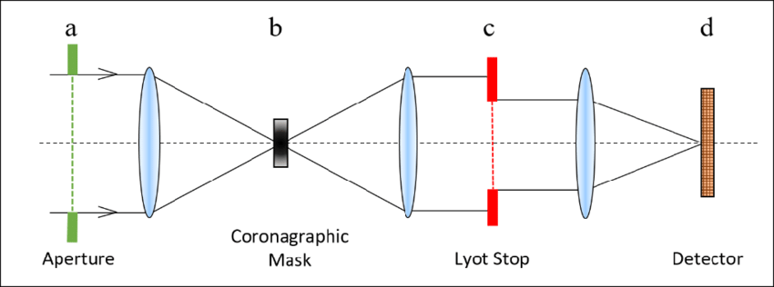

Differentiable Optics
Inference & Design
Louis DesdoigtsThe University of Sydney
Code and examples available on my Github
Benjamin Pope (UQ)
Peter Tuthill (USyd)
Inference & Design Problems in Optics
JWST, Toliman, & Beyond!JWST
Phase Retireval
Pixel-Level Calibration
AMI Mask Inference
Coronagraphic Inference
Toliman
Phase Retireval
Heriarchical Instrumental Models
Image Deconvolution
Beyond!
Low WFE resistance coronagraph design
Polarisation resistant coatings
Something something fibers
Crowded-field signal decontamination
Automatic Differentiation & Optics
Unifying Machine Learning and OpticsIsomorphism
What does a neural-network DO?

Isomorphism
What does an optical system DO?
Optical systems can be perfectly represented by neural networks, ie fully differentiable optical forwards models.
This is NO different to any other optical forwards model, just constructed in a differentiable programatic framework
dimensionality
differentiablilty